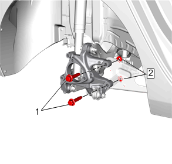
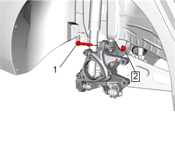
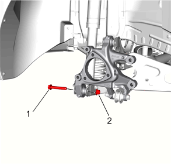
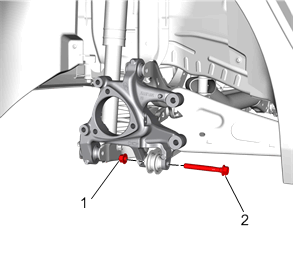
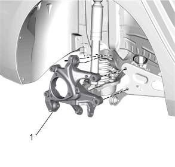

转向节的更换
拆卸程序
1.
后轮胎和车轮总成»拆下 –
轮胎和车轮的拆卸和安装
2.
后轮速传感器»拆下 –
后轮转速传感器的更换
3.
后制动钳托架»拆下 –
后制动钳托架的更换
4.
后制动盘»拆下 –
后制动盘的更换
5.
后制动器防溅罩»拆下 –
后制动器防溅罩的更换
6.
后轮轴承和轮毂»拆下 –
后轮轴承和轮毂的更换

7.
纵臂后螺母 (2)»拆下并报废[2x]
8.
纵臂后螺栓 (1)»拆下[2x]

9.
后悬架上横向连杆外侧螺母 (2)»拆下并报废
10.
后悬架上横向连杆外侧螺栓 (1)»拆下

11.
后悬架下控制臂外侧螺母 (2)»拆下
12.
后悬架下控制臂外侧螺栓 (1)»拆下并报废

13.
后悬架可调节连杆外侧螺母 (1)»拆下
14.
后悬架可调节连杆外侧螺栓 (2)»拆下并报废

15.
转向节 (1)»拆下
安装程序
1.
转向节 (1)»安装
2.
后悬架可调节连杆外侧螺母 (1)»安装
告诫：
有关紧固件的告诫
告诫：
该车辆装备了屈服力矩型或一次性使用紧固件。安装该部件时，安装一个新的屈服力矩型或一次性使用紧固件。不更换屈服力矩型紧固件可能导致车辆或部件损坏。
注意:
安装新的后悬架可调节连杆外侧螺栓。
3.
后悬架可调节连杆外侧螺栓 (2)»安装
紧固
•
第一遍：100N•m（74 lb ft）
•
最后一遍：90–105度
4.
后悬架下控制臂外侧螺母 (2)»安装
注意:
安装新的后悬架下控制臂外侧螺栓 。
5.
后悬架下控制臂外侧螺栓 (1)»安装
紧固
•
第一遍：100N•m（74 lb ft）
•
最后一遍：90–105度
6.
后悬架上横向连杆外侧螺栓 (1)»安装
注意:
安装新的后悬架上横向连杆外侧螺母。
7.
后悬架上横向连杆外侧螺母 (2)»安装
紧固
•
第一遍：100N•m（74 lb ft）
•
最后一遍：90–105度
8.
纵臂后螺栓 (1)»安装[2x]
注意:
安装新的纵臂后螺母。
9.
纵臂后螺母(2)»安装[2x]
紧固
•
第一遍：160N•m（118 lb ft）
•
最后一遍：60–75度
10.
后轮轴承和轮毂»安装 –
后轮轴承和轮毂的更换
11.
后制动器防溅罩»安装 –
后制动器防溅罩的更换
12.
后制动盘»安装 –
后制动盘的更换
13.
后制动钳托架»安装 –
后制动钳托架的更换
14.
后轮速传感器»安装 –
后轮转速传感器的更换
15.
后轮胎和车轮总成»安装 –
轮胎和车轮的拆卸和安装